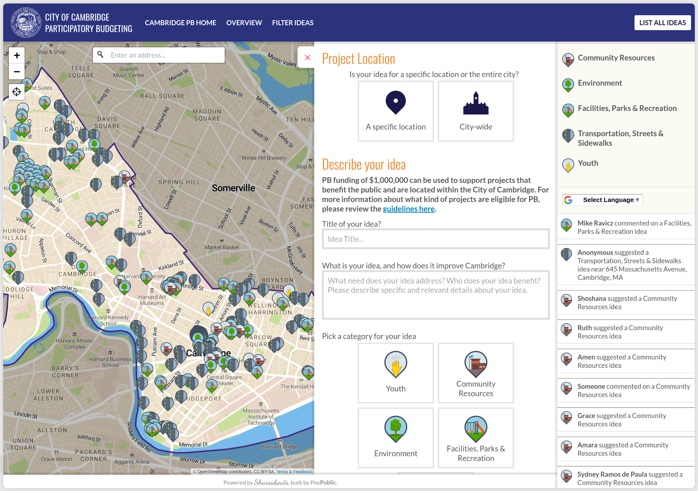

Cambridge, MA - Participatory Budgeting
We helped Cambridge, MA with their annual participatory budgeting process by providing an idea collection map for them to collect ideas from Cambridge residents.
Code Smarter Cities
We helped Cambridge, MA with their annual participatory budgeting process by providing an idea collection map for them to collect ideas from Cambridge residents.
We built a bikeshare station suggestion application for Lyft (who manages the Bluebikes bike share system in the Boston metro area) to collect information about where bike share riders would like to see new stations installed. This helps create a useful source of input for when active transportation planners in the cities around Boston are looking to expand the system.
We maintain the Shareabouts platform, which is the underlying technology for many of the projects that Poe Public builds.